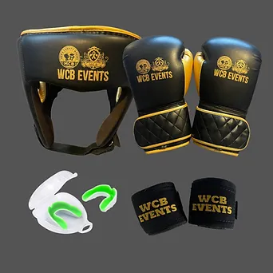
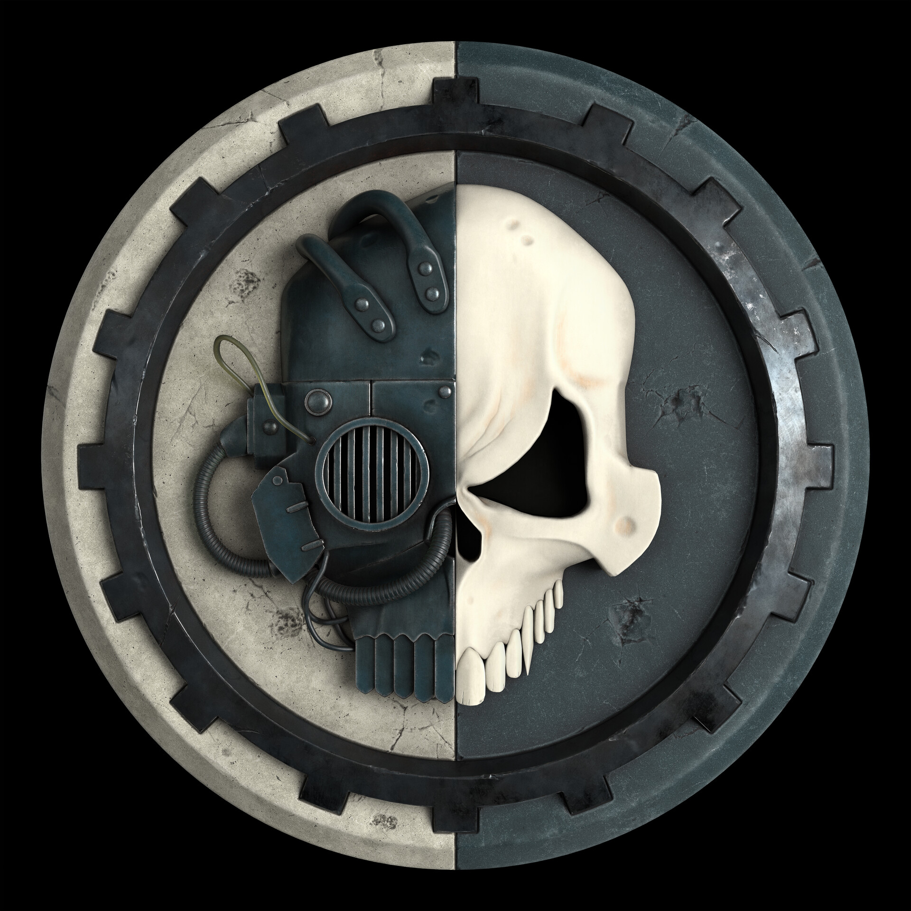
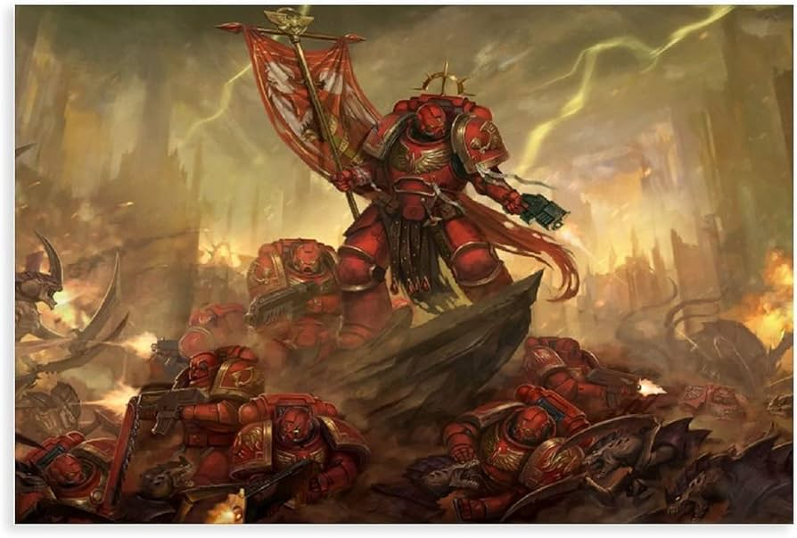
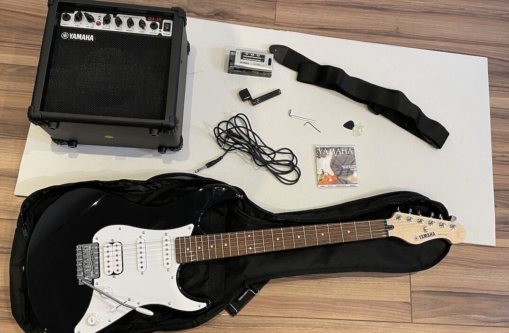

My hobies
Boxing
Boxing has been a significant part of my life for over 8 years. Throughout this time, I have participated in numerous competitions and earned valuable experience in the ring. In Ukraine, I achieved a first-class degree (or "перший разряд"), which is just below the Candidate Master of Sports (КМС) level. It was a proud achievement for me, reflecting the hard work and dedication I put into the sport. Boxing taught me discipline, resilience, and mental toughness, qualities that continue to influence my life today.
Required equipment for boxing:
- Boxing Gloves
- Used to protect your hands and wrists while punching and to ensure safety during training and fights.
- Hand Wraps
- These help protect the wrists and knuckles from injury while offering extra support to the hands inside the gloves.
- Boxing Shoes
- Specially designed footwear to ensure grip and allow for the quick movement required in the ring.
- Headgear
- Provides protection for the head during sparring sessions to minimize injuries to the face and skull.
Boxing requires more than just physical strength—it’s also about strategy and technique. One important tip for beginners is to focus on footwork. Proper foot positioning allows you to move quickly and maintain balance while attacking or defending. Another key to success is mastering the jab, as it’s the most fundamental punch that sets up many other combinations. As you advance, learning defensive techniques such as slipping and rolling can help you avoid punches while staying in control of the fight.
One of the most important tricks I learned throughout my boxing career is the importance of mental focus. Even when you’re physically prepared, staying calm and focused in the ring is essential. Visualization techniques helped me immensely—imagining myself executing successful moves before stepping into the ring gave me confidence. Another key aspect is endurance; boxing matches can be intense, and having the stamina to keep going when you're tired is crucial. It’s the hours of training and conditioning that prepare you for the hardest moments in a match.
I have many memorable experiences from my boxing journey, but one stands out. During a competition, I lost a fight because the judges gave my opponent 10 extra points without any clear reason. It was a frustrating experience, as I felt the decision was unfair. But looking back, it taught me a valuable lesson about the unpredictability of competition and the importance of controlling what I can—my performance in the ring. Despite this setback, I continued to train hard, and the lessons I learned helped me improve both as a boxer and as a person.
Warhammer 40K
My interest in Warhammer started with the computer game "Dawn of War," which introduced me to the vast and rich universe of Warhammer 40K. The game’s deep lore, epic battles, and intricate factions fascinated me. As I delved deeper into the Warhammer universe, I discovered more about the factions, their stories, and their motivations, eventually leading me to get a tattoo of the symbol of Adeptus Mechanicus. This symbol has a deep personal meaning for me as it represents both my love for the Warhammer lore and the mechanized, relentless pursuit of knowledge that the faction embodies. The Adeptus Mechanicus are dedicated to preserving and expanding the ancient technologies of the Imperium, and their unwavering commitment to their mission resonated with my own dedication to learning and personal growth.
The Adeptus Mechanicus are one of the most fascinating factions in Warhammer 40K, with their belief in the "Machine God" and their relentless pursuit of technological perfection. They are a technologically advanced group that controls much of the Imperium's tech and weapons, often using rituals and a blend of ancient tech and religious reverence. The symbol I chose for my tattoo represents their devotion to the Machine God, and it embodies the balance of faith, knowledge, and technology that defines the faction. For me, it symbolizes not just my love for the Warhammer 40K universe but also the idea of continuously striving for improvement and knowledge, no matter how difficult or complex the journey may be.
When I was a child, I couldn't afford to buy the expensive miniatures or sets for Warhammer. However, my love for the game didn’t stop me. I got creative and managed to build my own wargame inspired by the Warhammer 40K universe. I created my own models and rules, allowing me to experience the game’s tactics and strategy even without the official miniatures. This DIY approach was not just about necessity but also a way for me to bring my passion for the universe to life, despite the financial limitations I faced. It taught me resourcefulness, creativity, and how to make the most of what I had available.
Warhammer has since become more than just a hobby for me; it is a window into a world filled with lore, strategy, and creativity. My passion for the game has led me to connect with many other fans and share experiences, tactics, and customizations. Whether it’s painting miniatures or exploring the deep stories of the Warhammer universe, it has been a rewarding journey of both creative expression and strategic thinking.
Guitar
My passion for playing the guitar began in high school when one of my classmates brought in an old, nearly broken Soviet-era guitar. Despite its terrible sound, I felt an overwhelming sense of joy whenever I played it. The guitar was far from perfect, but the experience of making music on it was something truly special. That initial spark of excitement inspired me to work all summer to save up enough money to buy my own guitar. Once I had it, I dedicated myself to learning and playing every single day for a year, diving deep into the world of music and discovering the power of self-expression through sound.
A few guitar`s attachments that can make your life easier:
- Amplifier
- Sound modifiers (effects pedals)
- Guitar tuner
- Capo (for changing the key of songs)
- Straps (for comfortable playing while standing)
- Guitar picks
- Guitar stands
- Replacement strings
While I’m not playing as much now as I did back then, the guitar still holds a special place in my heart. Sometimes, when I need to release my emotions or just unwind, I’ll pick it up and strum a few chords. Even though I’m not playing daily anymore, the guitar remains a great way for me to connect with my emotions and express myself in ways words cannot. It’s a hobby that continues to bring me joy, whether I'm practicing new songs or just letting my feelings out through music.
Playing the guitar taught me discipline, patience, and the joy of making something with my own hands. It was through those long hours of practice that I learned to appreciate both the journey of learning and the moments of emotional release music can provide. Though I’m not as committed to it now, I’ll always carry the memories of those early days of guitar playing with me.
Kayaking
I just started kayaking this year when I joined my university's kayaking club. It’s been an exciting new experience, and I’ve quickly developed a passion for it. According to my clubmates, I’m doing really well for a beginner, and they’ve encouraged me to take part in an upcoming competition, Varsities. The sport has provided me with a new challenge, and I’m eager to test my skills in a competitive environment. It’s also a great way for me to connect with nature and stay active while enjoying the thrill of the water.
Required equipment for Kayaking:
- Kayak
- The most essential piece of equipment, designed to float and provide stability on the water, and it comes in various types depending on the style of kayaking.
- Paddle
- Used for propelling and steering the kayak, it typically consists of two blades and can vary in length depending on the kayak's design.
- Life Jacket (PFD - Personal Flotation Device)
- A critical safety item that keeps you afloat in the water and ensures that you remain safe in case of capsizing.
- Helmet
- Worn for protection, especially during rougher conditions or when navigating through challenging water features such as rapids.
- Waterproof Clothing
- Important for staying warm and dry, especially in cooler conditions or for longer kayaking sessions.
- Spray Skirt
- Worn to prevent water from splashing into the kayak, especially in rough waters or while performing advanced maneuvers.
- Dry Bags
- Used to keep personal items, like electronics or snacks, dry and safe while on the water.
- Water Shoes
- Provide comfort and grip, helping to prevent slipping when getting in or out of the kayak and walking on wet, rocky surfaces.
Kayaking is an exhilarating sport that requires both physical strength and mental focus. The balance of paddling and maneuvering through the water can be challenging at first, but with practice, it becomes incredibly rewarding. One important tip for beginners is to focus on maintaining a steady and controlled stroke, as this will help improve speed and stability. Another helpful suggestion is to practice balance in the boat before trying more advanced maneuvers—this is crucial for avoiding capsizing and ensuring a smoother ride.
Although I’m new to kayaking, the sense of accomplishment I feel after each practice session is motivating. The experience of learning something new and improving each time I get on the water has been exciting. I look forward to competing in Varsities and seeing how I fare, and I’m committed to continuing my training and honing my skills. Whether it’s for fun or competition, kayaking is a hobby that has brought me a sense of joy and personal achievement, and I’m excited to see where this journey takes me.